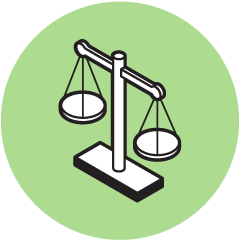
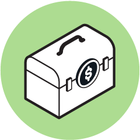

Educate
We work with financial companies to help them understand how to follow our rules. We write reports about the state of the market. We answer common consumer questions and create toolkits so people know what their next step should be.

Enforce
We take action against bad actors who hurt people in the financial services marketplace, returning billions of dollars to consumers.

Empower
We create tools that let consumers take greater control of their options. We create opportunities for entrepreneurs, experts, advocates, and the financial industry to innovate in consumer-friendly ways.